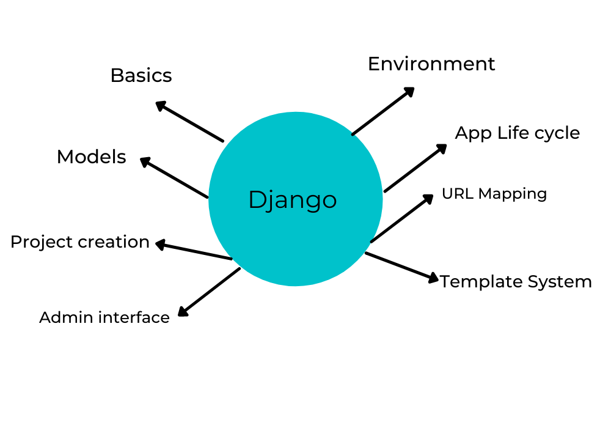
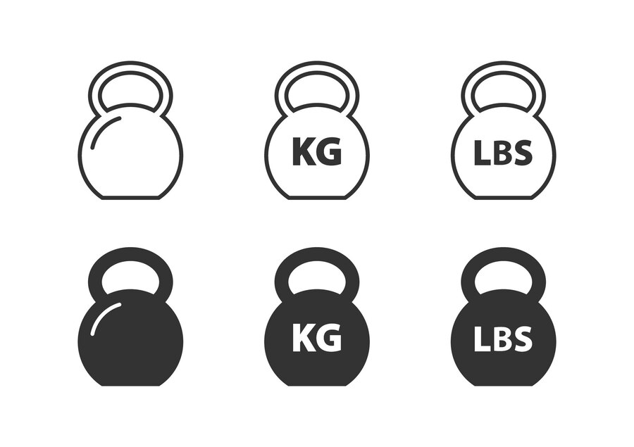

I've successfully developed a functional web shop using Django, allowing me to manage products easily through the
admin panel and present them in a visually appealing manner with custom HTML and CSS templates.
Behind the scenes, Django takes care of the heavy lifting, including database management.
I specified my data models and let Django's Object-Relational Mapping (ORM) automatically generate the database
schema and create tables.
This made the process remarkably efficient, allowing me to focus on building and refining my site's features.

This code is a comprehensive implementation of a music genre recommendation system,
tailored for a machine learning environment. Executed within a Jupyter Notebook running in the Anaconda ecosystem,
it harnesses essential libraries including pandas, scikit-learn, and joblib.
The script efficiently loads music data from a CSV file, performs preprocessing,
establishes and trains a Decision Tree Classifier model, rigorously evaluates model accuracy,
creates a visual representation of the decision tree,
and extends the functionality with features for model persistence.
I've not only demonstrated my proficiency in Salesforce administration but also showcased my problem-solving abilities,
adaptability, and attention to detail. These skills are highly transferable and valuable for various roles,
contributing to improved data management,
user access control, and data-driven decision-making within organizations.
This Python script utilizes the `openpyxl` library to process and modify an Excel workbook. It specifically targets the "Sheet1" of the workbook. The primary objective of the code is to reduce the prices in the third column by 10% and create a bar chart representing the corrected prices in the fourth column.
This code is presented as a script that processes Excel workbooks. It defines a function, process_workbook, which reduces prices in an Excel sheet and adds a bar chart to represent the corrected prices. The code provides a clear way to automate this process for Excel files, making it more efficient and error-free
A simple Python program that simulates a text-based car control game. It prompts the user for commands like "start",
"stop," "quit," and "help" and provides appropriate responses based on the input.
The program uses a while loop to continuously accept user input until the "quit" command is entered,
at which point it exits the loop and ends the program
This Python script demonstrates how to create a simple text-to-emoji converter using a dictionary. It allows you to input a message,
and the program will replace certain text-based emoticons with corresponding emoji symbols.
The code is presented in two forms: first, as a sequence of statements,
and then as a more organized version using a function for emoji conversion.

This Python script defines two functions for converting weight values between pounds and kilograms. It provides a simple way to perform these conversions programmatically.
This project showcases my ability to analyze, visualize, and present data effectively,
which is crucial for informed decision-making and business optimization. These skills empower me to help
organizations leverage their data assets and enhance their overall performance and decision-making processes.